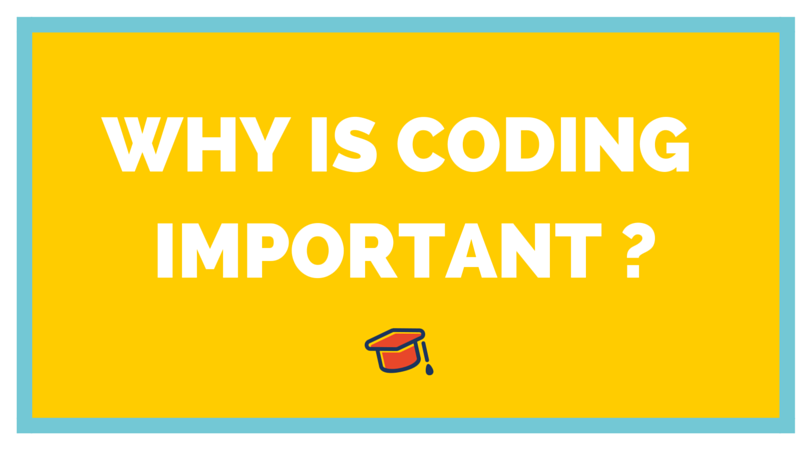

Our mission is to use coding and digital skills to enable inclusion and employment, and as a catalyst for social innovation and diversity. We are a combination between a coding bootcamp and a leadership course, based in Beirut and now Tripoli. Our aim is to get marginalised youth to participate in the growing needs of the local ICT and software sector.

- Programming is definitely a lucrative career option :
As we all know the world is moving towards automation and computation, which is why the need for programmers has also increased exponentially.
So, if you are searching for a lucrative career option, then programming is the best option for you.
You will not find any job scarcity for the next decade of years.
- World is craving for the good programmers :
As the world is moving towards industrialization, computers are becoming our necessity.
Computers are required in every field which ultimately increases the demands of good programmers who can solve their problems in a much efficient way.
So, if you are good at Programming than the world is full of opportunities for you.
- You don’t need any special qualification to be a Programmer :
Here is another good reason why you should learn Coding or Programming.
If you have a good knowledge of top Programming Languages and have a couple of projects to show, then your qualifications or degree doesn’t matter.
- Highest Paying Jobs available :
As Programming comes under one of the top highest paying Computer Science jobs. So, if you are a high pay seeker than Programming is for you.
- Creating Things :
If you love to create new things and want to impact the lives of millions of people with your product or service. Then Programming is one of the best options you can have.